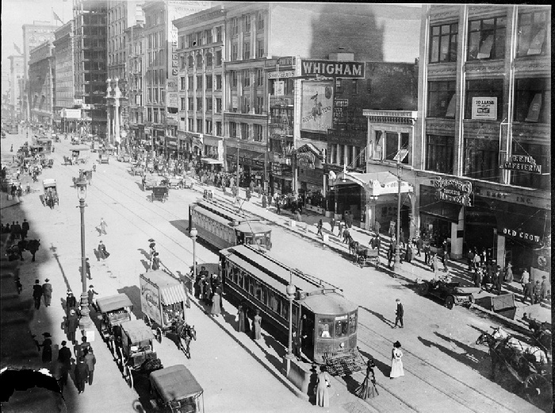
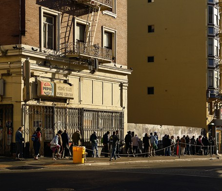

About the Tenderloin
The History:
Nicknames:
The L's, The TL, The Loins
How the Nieghborhood got it's Name
The neighborhood received its name around the 1900s. One theory of where name came from was supposedly the police who were working in this dangerous neighborhood and were given higher pay. Due to their pay raise, these police officers could afford more expensive meat like tenderloin. The other theory was that the police officers working the Tenderloin took bribes and that’s how they afforded meat like tenderloin.
 Cerca early 1900s source: opensfimages.org Present day source: modernluxury.com